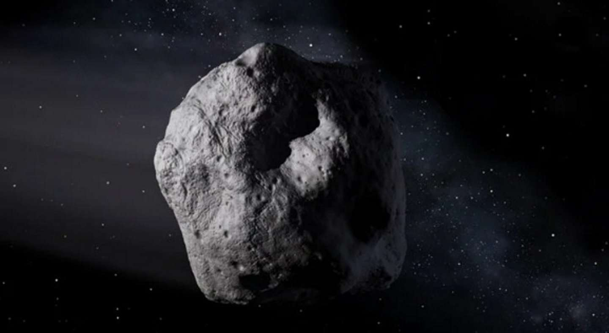

La NASA monitorea un asteroide “potencialmente peligroso” que pasará hoy cerca de la Tierra
El objeto denominado 418135 o 2008 AG33 estará a unos 3 millones de kilómetros de la superficie terrestre. Los especialistas aseguran que no hay riesgo de colisión.

El asteroide 418135 se mueve a 37.400 kilómetros por hora. (Foto: Ilustración NASA/JPL)
La NASA informó que un asteroide de gran dimensión pasará hoy cerca de la Tierra. El objeto denominado 418135 (también conocido como 2008 AG33) tendrá este 28 de abril su órbita más cercana a nuestro planeta cuando “apenas” 3.240.000 de kilómetros lo separen de la superficie terrestre.
Lee también:
La NASA envió por primera vez hologramas en 3D desde la Tierra a la Estación Espacial
La agencia espacial estadounidense, a través de su laboratorio JPL, señala que los asteroides que pasan a menos de 8 millones de kilómetros son “potencialmente peligrosos”. En este caso, aclararon que no existen riesgos de colisión.
418135 volará cerca de la Tierra: 5 datos sobre el asteroide
Tiene 457 metros de largo. A modo comparativo, presenta una dimensión similar a la del Empire State Building, el rascacielos ubicado en Nueva York.
Se mueve a una velocidad de 37.400 kilómetros por hora, que el sitio Science Alert define como “vertiginosa”. Viaja a más de 30 veces la velocidad de sonido.
Demora 1.77 años terrestres en dar la vuelta al Sol.
La trayectoria del asteroide puede seguirse con el simulador de la NASA denominado “Eyes on Asteroids”. Se trata de un asteroide del tipo Apollo, que atraviesan la órbita de la Tierra y son los más comunes en las identificaciones.
Su acercamiento a la Tierra (a unos 3.2 millones de kilómetros) es de aproximadamente ocho veces la distancia promedio entre nuestro planeta y la Luna.